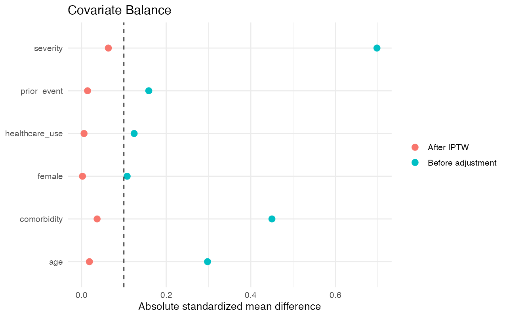
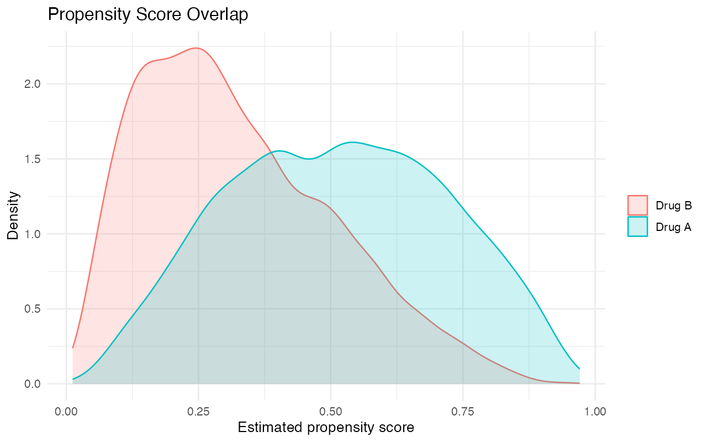
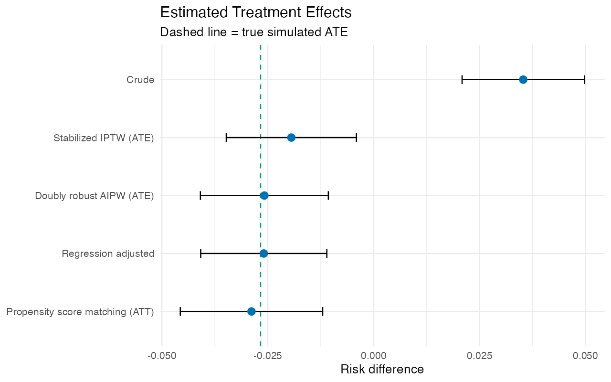
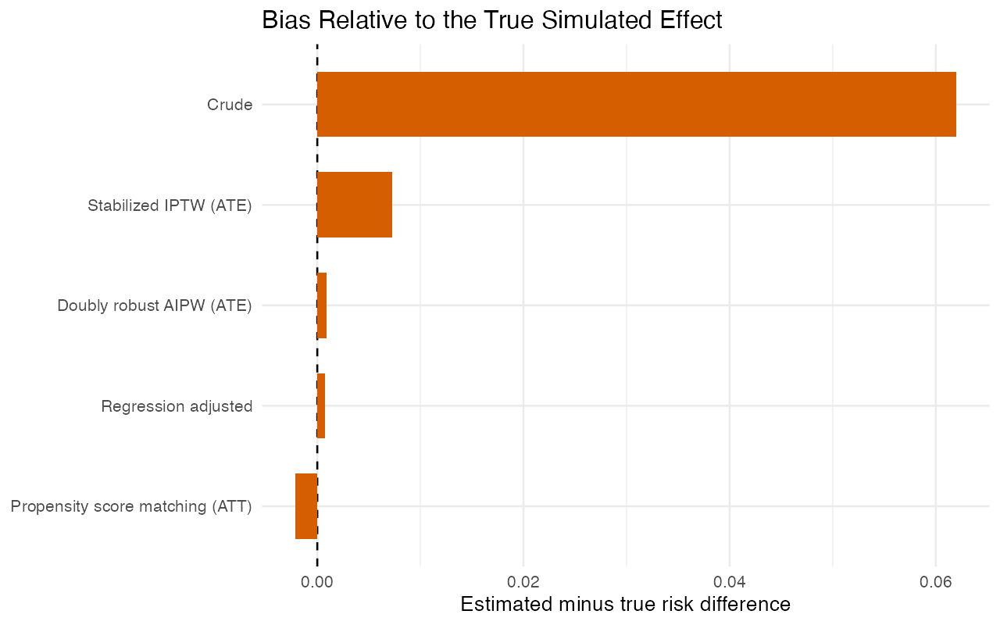

Question: How do confounding and method choice change comparative-effectiveness estimates?
| Method | Risk difference | 95% interval |
|---|---|---|
| Crude | 0.035 | 0.021 to 0.050 |
| Regression adjusted | -0.026 | -0.041 to -0.011 |
| Propensity score matching (ATT) | -0.029 | -0.046 to -0.012 |
| Stabilized IPTW (ATE) | -0.019 | -0.035 to -0.004 |
| Doubly robust AIPW (ATE) | -0.026 | -0.041 to -0.011 |




Adjustment can improve measured balance, but cannot guarantee removal of unmeasured confounding. Synthetic results are educational and not clinical evidence.